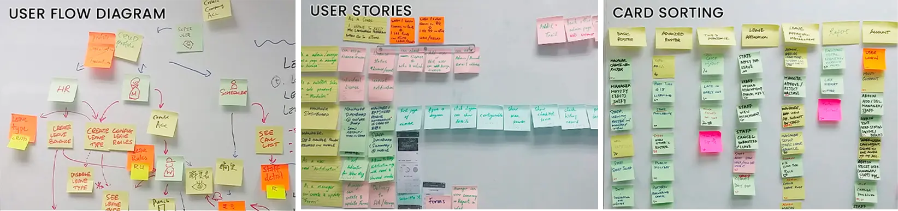

Design Process
These are some steps for this project. Click to expand each stage for details or simply scroll down to view the final outcome.
Focus Group Workshop
ˇAt the start of the project, we organized weekly focus group workshops with the app users, sspecially the client's staff who follow a set roster. Our main objective was to understand the challenges they face when it comes to tasks such as checking their roster, applying for leave, and other related activities.
During these workshops, we utilized sticky notes and a whiteboard to gather and consolidate data from the focus group. We have learned that every time a new roster is prepared, HR prints a few hard copies and displays them in the office for staff to review. If staff wish to swap shifts or request leave, they must obtain approval from their supervisor. Upon receiving approval, they make manual changes to the printed roster, resulting in a messy document. HR is then required to collect these copies to calculate payroll each month. This is painful to everyone involved.
Similar problem also happened for clock in/out process. If a staff's clock in/out time doesn't align with the scheduled roster, they are required to fill out a paper form explaining the discrepancy and submit it to their supervisor and HR. Failure to do so may impact their payroll.
User Personas
ˇAfter conducting interviews and observations during the focus group workshops, we designed 3 personas to represent staffs, managers, and HR personnel.
- Jane WongCargo Officer
- 36-y-o
- High School Graduate
- Married with two children
- Smartphone
- Goals and Needs
-
- Check the latest update to her roster as soon as possible so she can plan her schedule with her children
- Be able to swap shifts with coworkers or apply for leave urgently in case of unexpected family needs
- Patrick LauLogistics Team Lead

- 42-y-o
- Bachelor's Degree
- Married with 1 child
- Smartphone, Computer
- Goals and Needs
-
- Obtain the latest update on the team roster to know who is on duty
- Ensure smooth operations, make sure the team follows the planned work schedule
- Be able to promptly approve leave and shift swap requests from the team
- Emily YeungHR

- 30-y-o
- Bachelor's Degree
- Single
- Smartphone, Computer
- Goals and Needs
-
- Edit and publish staff roster accurately, ensuring all staff have access to the latest updates
- Track actual working hours for accurate payroll
- Manage leave roles for different leave types so staff can apply accordingly
Use Case Diagram
ˇFollowing the workshop, we gained insights into the distinct challenges and requirements of various user segments. Subsequently, our focus shifted to examining the interactions of these user groups with the existing Workforce Management (WFM) online system.
We illustrated a use case diagram to comprehend how events flow between various users and the system, thereby facilitating clear communication with stakeholders regarding project scope and progress.